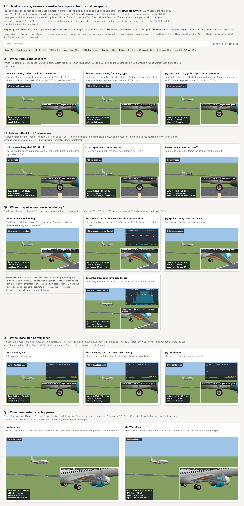
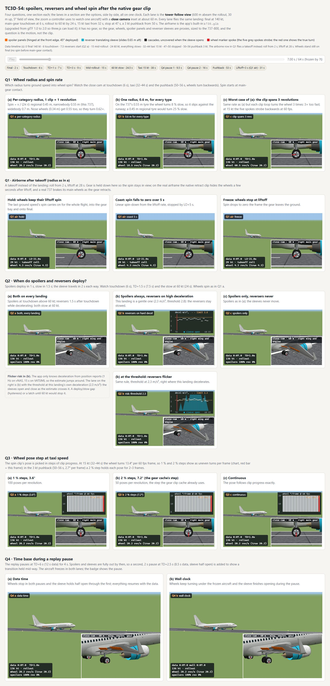
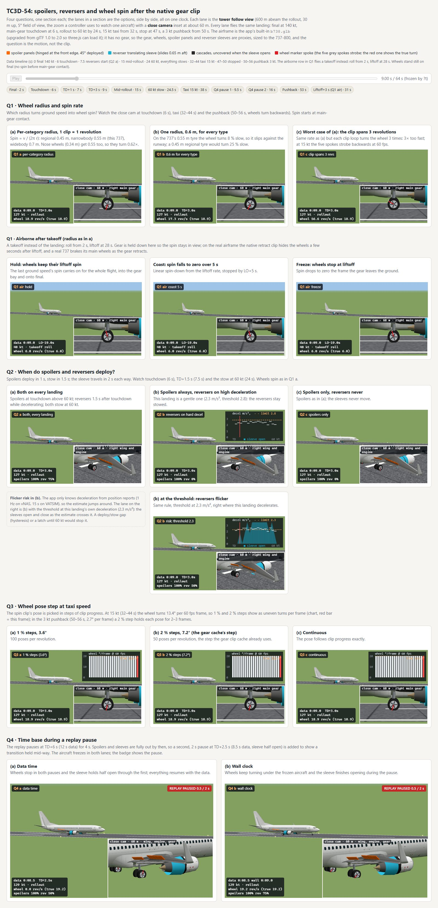
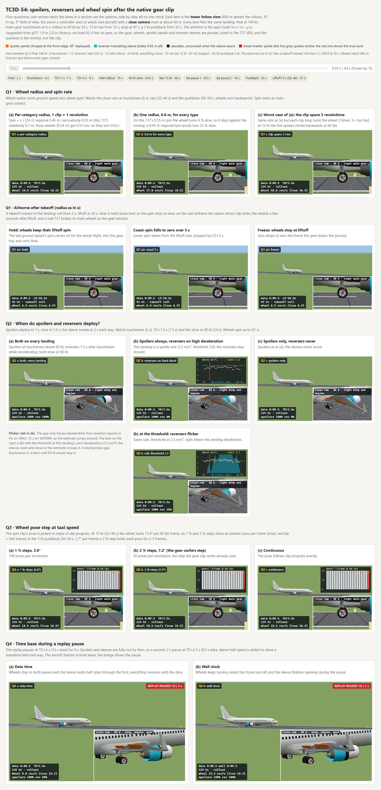
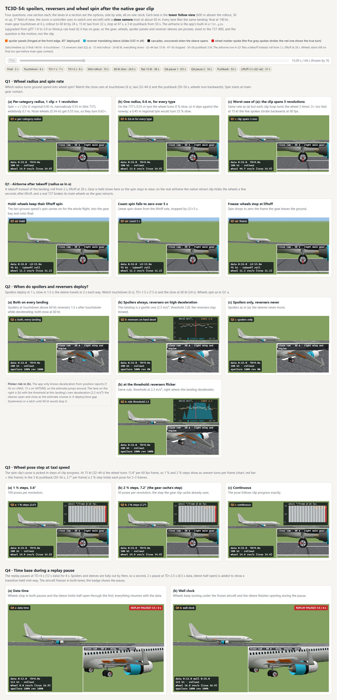
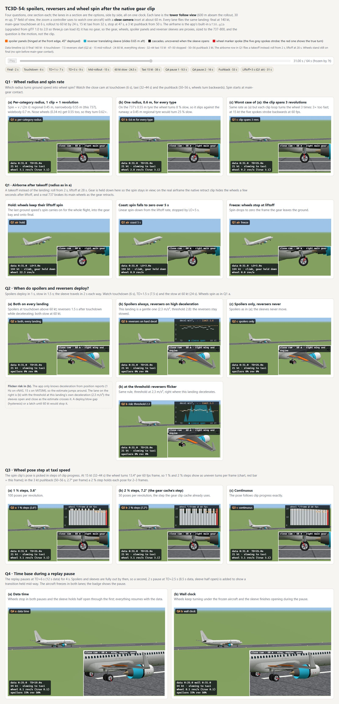
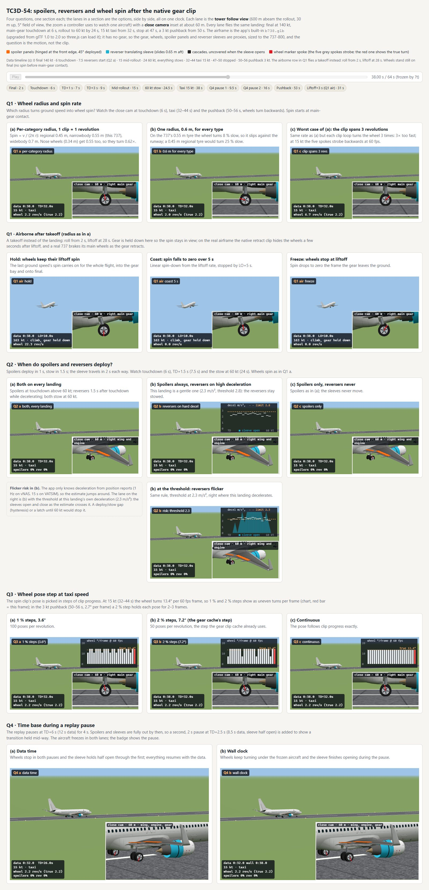
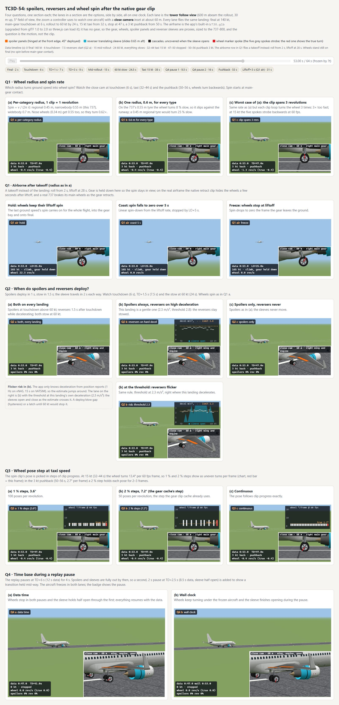

Four questions, one section each; the lanes in a section are the options, side by side, all on one clock. Each lane is the
tower follow view (600 m abeam the rollout, 30 m up, 5° field of view, the zoom a controller uses to watch one
aircraft) with a close camera inset at about 60 m. Every lane flies the same landing: final at 140 kt, main-gear touchdown
at 6 s, rollout to 60 kt by 24 s, 15 kt taxi from 32 s, stop at 47 s, a 3 kt pushback from 50 s. The airframe is the app's
built-in b738.glb (upgraded from glTF 1.0 to 2.0 so three.js can load it); it has no gear, so the gear, wheels,
spoiler panels and reverser sleeves are proxies, sized to the 737-800, and the question is the motion, not the clip.
Data timeline (s): 0 final 140 kt · 6 touchdown · 7.5 reversers start (Q2 a) · 15 mid-rollout · 24 60 kt, everything stows · 32–44 taxi 15 kt · 47–50 stopped · 50–56 pushback 3 kt. The airborne row in Q1 flies a takeoff instead: roll from 2 s, liftoff at 28 s. Wheels stand still on final (no spin before main-gear contact).
Headless renders of this page at the moments named; the live lanes above are the thing to judge, since spin and stepping only show in motion.







